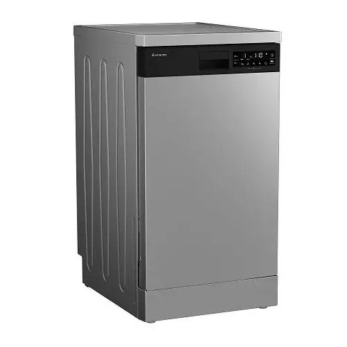

اريستون غسالة اطباق 60 سم 15 فرد أنفرتر لون سيلفر

كاش
27,279 جنيه
السعر محدّث النهاردة · السعر في الفرع هو الأساس
تحليل سريع
أرقام محسوبة من المعروض عندنا
سعره مقارنة بالمقاس ده
رقم 30 من 62 من الأرخص للأغلى
من بين 62 منتج بنفس المقاس عندنا
الضمان
5 سنة
ضمان الوكيل
سعره بين 62 منتج بنفس المقاس عندنا
27,279
الأرخص 7,059الأغلى 129,990
مقارنة بأقرب المنتجات
أقرب ٣ منتجات من نفس النوع والمقاس عندنا
| ده أريستونDFN856XQ | إل جيFAJ3TMGSPافتح › | أريستونNLM11946 SC AEXافتح › | سامسونجWA19CG6745BV/ASافتح › | |
|---|---|---|---|---|
| سعر الكاش | 27,279 | 26,999 | 27,673 | 27,999 |
| سعر التقسيط | — | 29,999 | — | 28,999 |
| المقاس (كيلو) | — | 8 | 9 | 19 |
| سرعة العصر | — | — | 1,400 لفة | — |
| الضمان (سنة) | 5 | 10 | 5 | — |
| فرق الكاش | — | 3,000 | — | 1,000 |
✓ = الأفضل في السطر ده · دوس على اسم أي منتج تشوف صفحته
اعرف قبل ما تختار
المصطلحات اللي على الكارت، بالعربي
سرعة العصر (اللفة) تفرق؟كل ما زادت اللفة، الغسيل بيطلع أنشف وبيجف أسرع. 1000 لفة كفاية، و1400 أحسن للبطاطين والتقيل.
البخار بيعمل إيه؟بيساعد في إزالة البقع والحساسية من غير نقع، وبيقلل الكرمشة.
الفرق بين فتحة أمامية وعلوية؟الأمامية بتوفر مياه وكهربا وبتتحط تحت الرخامة. العلوية أسهل في التحميل ومش محتاجة تنحني.
أسئلة عن المنتج ده
الضمان كام؟5 أعوام ضمان الوكيل · صنع في تركيا
باختصار
اللون: فضىضمان 5 أعوامبلد الصنع تركيا
النوع: غسالة أطباق قائمة بذاتها الميزات الرئيسية: خيار نصف الحمولة برامج اقتصادية، مكثفة، تجفيف سريع، غسيل أولي، العناية بالزجاج موتور انفرتر
المواصفات الكاملة
اللون
فضى
الضمان
5 أعوام
بلد الصنع
تركيا
الأسعار شاملة الضريبة · التوصيل والتركيب مجانًا داخل القاهرة
آخر تحديث للأسعار 2026-09-26
آخر تحديث للأسعار 2026-09-26